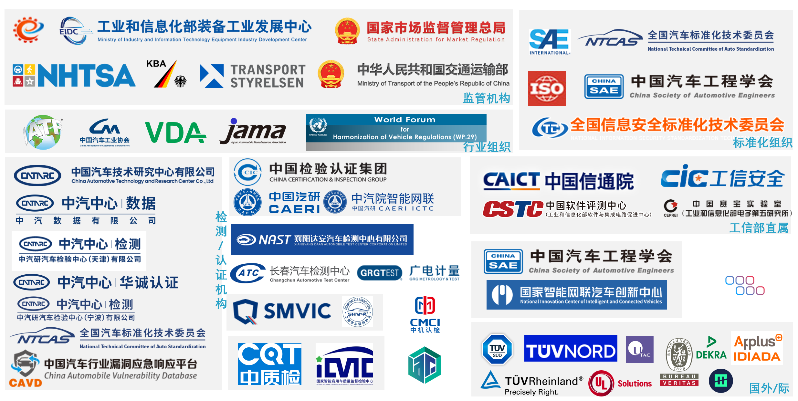

车联网安全基础知识之常见组织机构
车联网安全基础知识之常见组织机构
前段时间与一个正在找工作的朋友聊了很多，吐槽了一下行业目前的窘境，也在试图探讨一些出路。他很年轻，还有大把时间去历练。在谈到有哪些方向/公司可以选择的时候，发现他对车联网安全生态了解不够全面， 安全厂商、主机厂、检测机构、认证机构、监管机构等具体有哪些不太清楚。还有一些让很多人迷惑的问题，到底谁是中汽研。在我给他解答疑问之后，他建议我写一篇文科普一下。
最近得闲，将主要的组织机构进行了梳理，尝试通过绘制全景图的方式来回答这个问题。

监管机构
国内
- 工信部装备司 主要负责车型上市审批备案等；
- 工信部网安局 车联网安全监管, 铸网行动由网安局发起。
- 通管局 工信部下负责各地区日常管理；
- 交通部 主要负责车辆运行道路监管等；
- 市场监管总局 主要负责缺陷处置汽车召回；
- 自然资源部 对空间地理数据采集、存储、使用等进行监管。将出台强标《智能网联汽车时空数据传感系统安全基本要求》。
- 网信办、公安部等
国外
- 德国：KBA(德国联邦机动车交通管理局)。最近出海火热，德国的 UN-R156 SUMS、R155/156 VTA 证书是由KBA颁发的。
- 美国：NHTSA(国家公路交通安全管理局)。
- 瑞典：STA(瑞典交通部)等
组织
- UN/WP. 29 联合国世界车辆法规协调论坛,一个独特的全球性监管论坛。 发布了R155、R156等法规，CSMS、VTA 认证的来源于此。
汽车工业协会
- IATF(International Automotive Task Force,国际汽车工作组). 为了协调国际汽车质量系统规范，由世界上主要的汽车制造商及协会于1996年成立的一个专门机构。
- CAAM(中国汽车工业协会)
- VDA(德国汽车工业协会)
- Jama(日本汽车工业协会)等
标准化机构
- ISO(国际标准化组织)成立于1947年，是标准化领域中的一个国际组织。
- ISO国内对应的就是GB(国家标准)，由国家市场监督管理总局主管，汽车行业分委会名为 全国汽车标准化技术委员会，简称汽标委。
- 汽标委(全国汽车标准化技术委员会)秘书处设在中汽中心，委员会编号 TC114。汽车行业的强制标准GB、推荐标准GB/T 都是汽标委组织编写的。
- 信安标委(全国网络安全标准化技术委员会)，委员会编号 TC260,负责国内信息安全标准制定，在汽车行业的影响力弱于
汽标委。 - SAE(国际自动机工程师协会), 原译 “国际汽车工程师学会” 成立于1905年，是全球最大的汽车工程学术组织。目前的研究方向已扩展至航空航天、机械工程、动力工程等领域。ISO/SAE 21434 就是 ISO和SAE 共同制定的。
- China SAE(中国汽车工程学会)是本土化的SAE,成立于1963年，是由中国汽车科技工作者自愿组成的全国性、学术性法人团体，与美国SAE、日本 SAE并称为世界三大汽车科技社团。
检测/认证机构
国家级检测中心
| 检测中心 | 主办单位 |
|---|---|
| 国家新能源汽车质量监督检验中心 | 中汽研汽车检验中心(武汉)有限公司 |
| 国家机动车质量检验检测中心(重庆) | 中国汽车工程研究院股份有限公司检测中心 |
| 国家轿车质量检验检测中心 | 中汽研汽车检验中心(天津)有限公司 |
| 国家汽车质量检验检测中心(襄阳) | 襄阳达安汽车检测中心有限公司 |
| 国家机动车产品质量检验检测中心(上海) | 上海机动车检测认证技术研究中心有限公司 |
| 国家汽车质量检验检测中心(北京通州)) | 中公高远(北京)汽车检测技术有限公司 |
| 国家高原机动车质量检验检测中心) | 中汽研汽车检验中心(昆明)有限公司 |
| 国家汽车质量监督检验中心(长春) | 长春汽车检测中心有限责任公司 |
| 国家汽车质量检验检测中心(北京顺义) | 北京市产品质量监督检验研究院 |
| 国家汽车质量检验检测中心(广东) | 佛山市质量计量监督检测中心 |
| 国家重型汽车质量监督检验中心 | 济南汽车检测中心有限公司 |
| 国家客车质量检验检测中心 | 招商局检测车辆技术研究院有限公司 |
| 公安部交通安全产品质量监督检测中心 | 国家道路交通安全产品质量监督检验中心 |
| 国家工程机械质量检验检测中心 | 中机科(北京)车辆检测工程研究院有限公司 |
| 国家汽车质量检验检测中心(广西) | 柳州汽车检测有限公司 |
| 国家智能商用车质量检验检测中心 | 中质智通检测技术有限公司 |
| … | … |
国内
- 中汽中心(中国汽车技术研究中心有限公司)总部位于天津。汽标委秘书处,车联网产品安全漏洞专业库(CAVD)运营单位,旗下有多家公司，中汽数据、华城认证、天检(中汽研汽车检验中心(天津)有限公司)等。铸网行动2022/2023牵头单位之一。
- 中国汽研(中国汽车工程研究院股份有限公司),总部位于重庆，北京有分支机构。现现隶属于中国检验认证集团，旗下有中汽院等。
- 襄阳达安汽车检测中心有限公司 位于湖北襄阳，隶属于东风汽车。
- 上机检(上海机动车检测认证技术研究中心有限公司)。旗下有上海智能网联汽车技术中心车联网信息安全检测中心。上海车联网协会秘书处设在上研智联智能出行科技(上海)有限公司。铸网行动2022/2023牵头单位之一，今年正在牵头组织铸盾车联。
- 中机认检(中机寰宇认证检验股份有限公司,CMCI)成立于2003年，总部位于北京，注册资本1.69亿元，是国务院国资委直属中国机械科学研究总院集团有限公司控股的二级中央企业,旗下有中汽认证中心有限公司、中机博也(宁波)汽车技术有限公司等。
- 广电计量(广电计量检测集团股份有限公司)是广州数字科技集团旗下上市企业。
- 中质检(中质智通检测技术有限公司) 主办 国家智能商用车质量检验检测中心。
- 工信部直属事业单位
- 国汽智联(国汽（北京）智能网联汽车研究院有限公司)位于北京，由中国汽车工程学会、中国汽车工业协会及中国智能网联汽车产业创新联盟共同发起筹建，22家车企/供应商各出资5000万(元)成立。采用 “公司”+“联盟”模式。铸网行动2022/2023牵头单位之一。
- 等
国外
- TÜV 南德，总部位于德国。出海发证较多。向均联智行、德赛西威等颁发了ISO/SAE 21434汽车网络安全管理体系认证证书，向东风、零跑等颁发了 UN R155/R156证书。
- TÜV 北德，总部位于德国，向文远知行、Apollo、北云科技等颁发了ISO/SAE 21434汽车网络安全管理体系认证证书。
- TÜV 莱茵，总部位于德国,向一汽、比亚迪、长城、上汽乘用车等颁发 R155 CSMS 证书，向联合电子、芯驰科技等颁发ISO/SAE 21434汽车网络安全管理体系认证 证书。
- DEKRA(德凯)，总部位于德国。全球最大的独立非上市专业检验检测认证机构。向华为、佛吉亚歌乐电子、VicOne等颁发了ISO/SAE 21434汽车网络安全管理体系认证证书。
SGS，总部位于瑞士日内瓦。 2022年7月,SGS为东软睿驰颁发ISO/SAE 21434:2021汽车信息安全流程认证证书。
UTAC(于达克) 位于法国，从事试验和工业化分析活动，自1994年起开展汽车领域的体系与产品认证业务。
ATEEL 位于卢森堡的机动车辆及其零部件认证的国际技术服务机构。国内由上海/苏州星荣汽车技术有限公司代理。
Applus+ IDIADA，总部位于西班牙。2023年7月，IDIADA 中国总经理向颁发极氪网络安全双认证 极氪通过联合国UN R155认证
- Bureau Veritas(必维),成立于法国。2023年11月，必维集团汽车服务事业部向中通客车股份有限公司颁发了由瑞典交通部(STA)批准的UNECE R155 及R156四项证书。
- UL Solutions 总部位于美国，颁发ISO/SAE 21434汽车网络安全管理体系认证证书较多。
- 等
谁是中汽研？
中汽研 做汽车安全的肯定躲不掉这个缩写，也迷惑了很多人。至今不少人还经常搞混淆。两年之前给同事科普过，今天再次来尝试回答这个问题。
有两个机构常被称为中汽研。
中汽中心，注册了很多以中汽研开头的子公司。一般用中汽研代指他们较多。中汽中心是汽标委秘书处、CAVD 运营单位等，在一定程度上讲也是监管单位。
中国汽车工程研究院股份有限公司，缩写为中国汽研。
中国->中，然后就被叫做 中汽研了。原名重庆重型汽车研究所。
至于谁是真正的“中汽研”，并没有孰真孰假，都是国字号的大型企业。为了区分,有部分人用 中汽研（天津）、中汽研（重庆）进行区分，或直接用中汽中心，中国汽研。
参考
系列文章
- 车联网安全基础知识之汽车模块化平台
- 车联网安全基础知识之大众集团汽车电子电气架构
- 车联网安全基础知识之TBOX主要功能
- 车联网安全基础知识之大众J949(OCU/T-BOX)
- 车联网安全基础知识之充电基础设施
- 车联网安全基础知识之从插线端子分析车内通信网络结构
- 车联网安全基础知识之QNX命令
- 车联网安全基础知识之测试台架购买
- 车联网安全基础知识之USB SPH2.0线束制作
- 车联网安全基础知识之UDS刷写前置基础知识
- 车联网安全基础知识之 UDS 刷写安全
- 车联网安全基础知识之ECU常见接插件/连接器
- 车联网安全进阶之跨境传输检测方法与脚本
- 车联网安全进阶之整车渗透测试实践
- 车联网安全进阶之Trick——Android车机运行Python